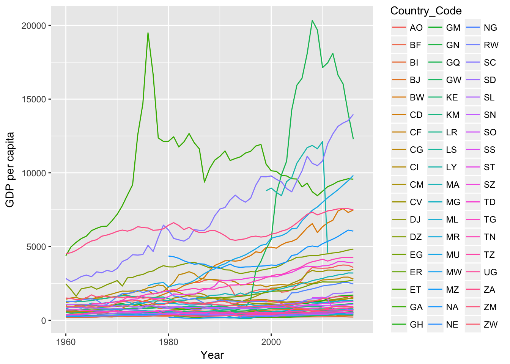

library(countrycode)
library(WDI)
library(magick)
library(tidyverse)
library(ggmap)
library(maps)
library(mapdata)
library(magrittr)
library(gganimate)
library(viridis)We also need to fix some of the names slightly
countries = countrycode::codelist_panel
africa_countries = countries %>%
filter(continent == 'Africa') %>%
select(country.name.en, iso2c) %>%
unique.data.frame() %>%
rename(Country_Name = country.name.en,
Country_Code = iso2c) %>%
mutate(Country_Name = if_else(Country_Name == "Congo - Brazzaville", 'Republic of the Congo', Country_Name),
Country_Name = if_else(Country_Name == "Congo - Kinshasa",'Democratic Republic of the Congo', Country_Name),
Country_Name = if_else(Country_Name == "Côte d’Ivoire",'Ivory Coast', Country_Name),
Country_Name = if_else(Country_Name == "Réunion",'Reunion', Country_Name),
Country_Name = if_else(Country_Name == "St. Helena",'Saint Helena', Country_Name),
Country_Name = if_else(Country_Name == "São Tomé & Príncipe",'Sao Tome and Principe', Country_Name))africa_gdp = WDI(indicator='NY.GDP.PCAP.KD',
country=africa_countries$Country_Code,
start=1940,
end=2018) %>%
rename(Country_Code = iso2c,
GDP = NY.GDP.PCAP.KD) %>%
select(Country_Code, GDP, year)Let’s look at the GDP as a function of time
ggplot(africa_gdp, aes(year, GDP, color=Country_Code)) + geom_line() +
xlab('Year') + ylab('GDP per capita')
Lets get the map of africa.
Join it all together
africa = africa_map %>% left_join(africa_countries) %>% left_join(africa_gdp)## Joining, by = "Country_Name"## Joining, by = "Country_Code"p = africa %>%
ggplot(aes(x = long, y = lat, group = group, fill = log10(GDP), frame = year)) +
coord_fixed(1.3) +
geom_polygon() + theme_minimal() + scale_fill_viridis()
#gganimate(p)
gganimate(p, "africa.mp4")## Executing: 'ffmpeg' -y -framerate 1 -i Rplot%d.png -pix_fmt yuv420p africa.mp4##
##
## Video has been created at: /Users/kieran/Downloads/kmace.github.io/content/post/africa.mp4Africa_GPD